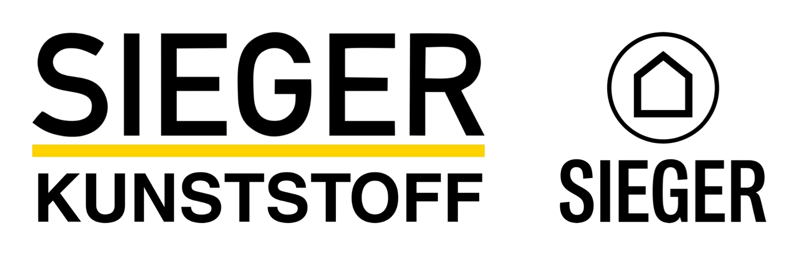
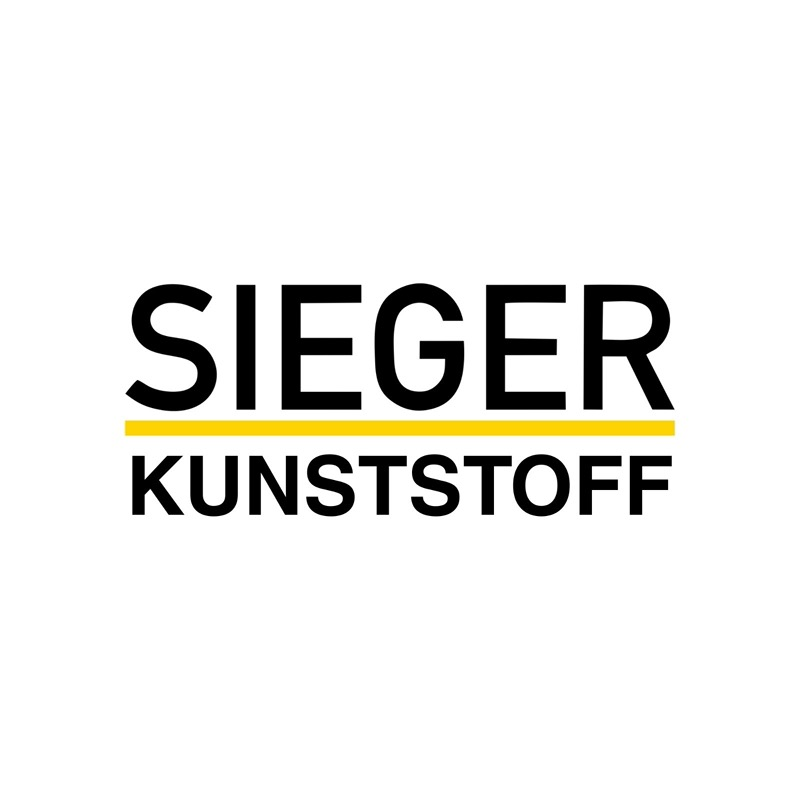
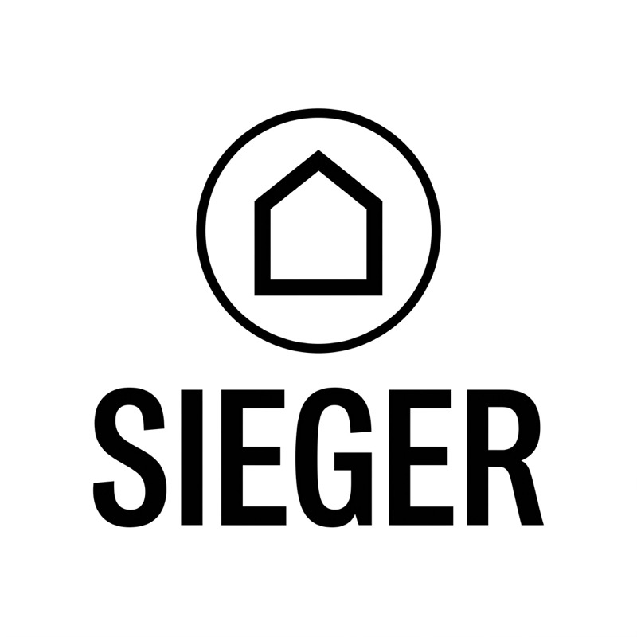

О компании

Sieger объединяет две казахстанские компании — ТОО «Sieger Kunststoff» и ТОО «Sieger Systems». В интернет-магазине Sieger можно ознакомиться с ассортиментом, узнать цены и оформить заказ.

ТОО «Sieger Kunststoff»
